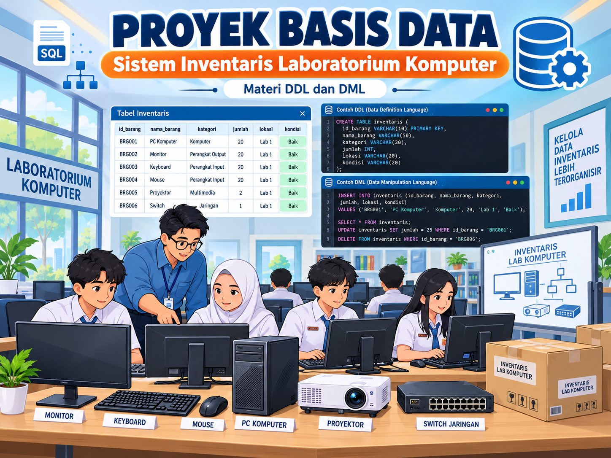
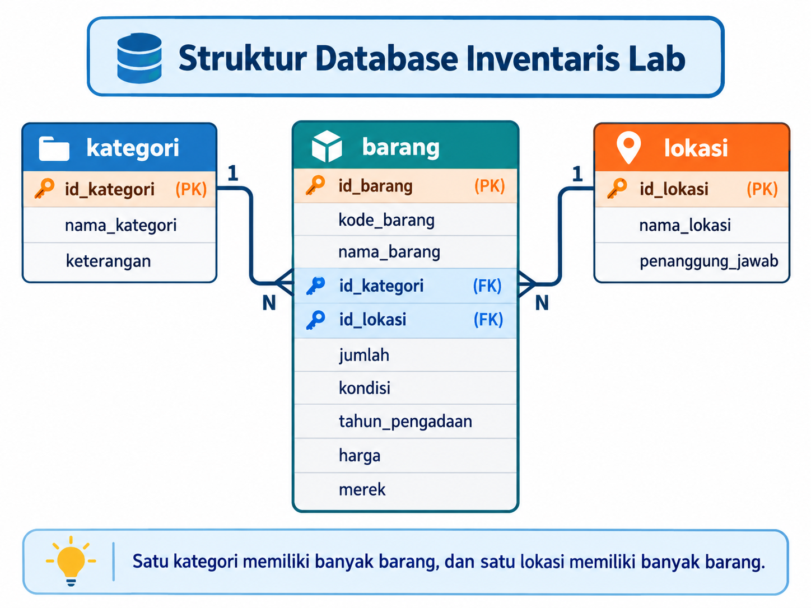
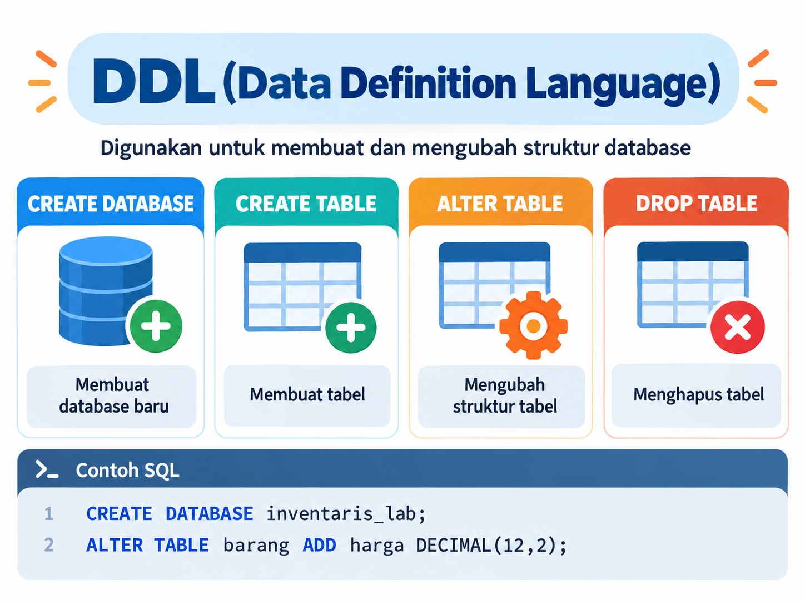
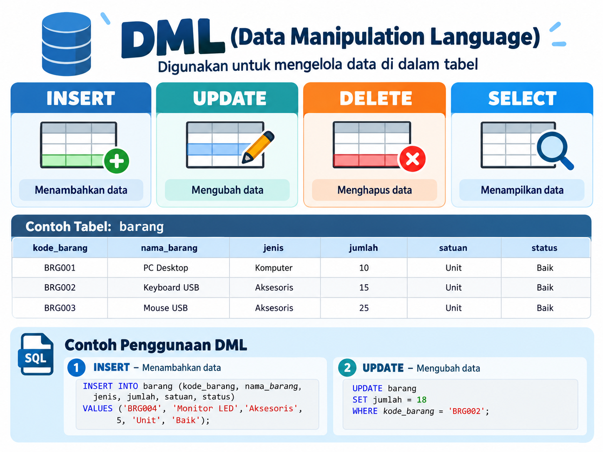

Bagian A
0 poin
Soal
Yang harus terpenuhi
MySQL-style simulator
Hasil Query
Output simulatorHasil query akan tampil di sini.

Bangun Sistem Inventaris Laboratorium Komputer melalui 22 soal praktik yang dapat langsung dijalankan, diperiksa, dan disimpan di browser.



Klik salah satu tabel di Database Explorer untuk melihat struktur dan datanya.
CREATE DATABASE inventaris_lab; USE inventaris_lab;
CREATE TABLE contoh ( id INT AUTO_INCREMENT PRIMARY KEY, nama VARCHAR(100) NOT NULL );
-- Satu ALTER, dua kolom ALTER TABLE barang ADD COLUMN harga DECIMAL(12,2), ADD COLUMN merek VARCHAR(50); -- Atau dua ALTER terpisah ALTER TABLE barang ADD harga DECIMAL(12,2); ALTER TABLE barang ADD merek VARCHAR(50);
INSERT INTO contoh (nama)
VALUES ('Data A'), ('Data B');UPDATE contoh SET nama = 'Baru' WHERE id = 1; -- Operasi angka juga didukung UPDATE barang SET jumlah = jumlah - 3 WHERE kode_barang = 'BRG003';
DELETE FROM contoh WHERE id = 1;
SELECT * FROM contoh WHERE nama = 'Data A' ORDER BY nama ASC;
SELECT a.nama, b.kategori FROM barang a JOIN kategori b ON a.id_kategori = b.id_kategori;
SHOW TABLES; DESCRIBE barang;